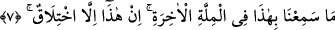
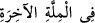
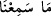
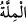
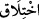
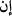
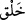
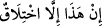

Mekkelilerin Hz. Peygamber’e (s.a.) karşı defalarca komplo kurmak üzere
toplanmaları ve buna mukabil Allah’ın nurunu tamamlamaktan asla vazgeçmemesi de
bunun delilidir.
7. Son dinde de bunu işitmedik. Bu, ancak bir uydurmadır.
Biz “son dinde de bunu” yâni Muhammed’in dile getirdiği bu tek tanrıcılığı (tevhîd)
duymadık, “işitmedik.”
(__WORD__) yâni “son dinde” ifâdesi, (__WORD__) “duymadık” cümlesinin zarf-ı
lağvi’dir. Anlamı şudur: Bunu, atalarımızın inandığı ve yaşadığı dinde işitmedik. “Son
din” ifâdesi her ne kadar İslam’dan önceki Hıristiyanlığı ifâde ediyorsa da burada
sözün makamına uygun olanı, Kureyşlilerin sâhip olduğu dindir. Çünkü o da kendisinden
önceki din ve mezheplerden sonradır.
Burada câhillerin taklide, alışkanlıklara ve kendilerinden öncekileri içinde buldukları
dalâlet ve hatâlı ibâdet tarzlarına meyyâl olduklarına işâret edilmektedir.
Ey bedevî! Korkarım ki Kâbe’ye ulaşamazsın,
Çünkü tuttuğun bu yol Türkistan’a doğrudur.
(__WORD__) “millet” lafzı, din lafzı gibi Allah’ın peygamberleri aracılığıyla -sâyesinde
Allah’ın mükafatına ve yakınlığına ulaşabilsinler diye,- kulları için teşrî buyurduğu
sistemin adıdır. Her iki lafzın da müşrik inanç sistemi için kullanılması teşbihe dayalı
bir mecâzdır.
“Bu, ancak bir uydurmadır.”
Yâni kendi kafasından uydurduğu yalandan başka bir şey değildir. (__WORD__) ihtilâk,
kafasından uydurup yalan söylemek demektir. Buradaki (__WORD__), (__WORD__) anlamında olup
nâfiyedir.
el-Müfredât’ta şöyle der: Bir söz tavsif edilirken ne zaman “ __WORD__/yaratma” masdarı
(ve türevleri) kullanılsa, o sözün yalan olduğu anlatılmak istenir. Zaten (__WORD__) “yaratma”
lafzının Kur’an için kullanılmasına birçok âlim bu sebeple karşı çıkmıştır. “Bu, ancak
bir uydurmadır. (__WORD__)” ifâdesi de böyledir.